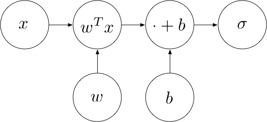
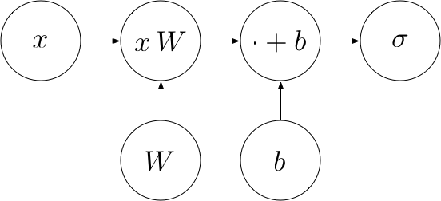
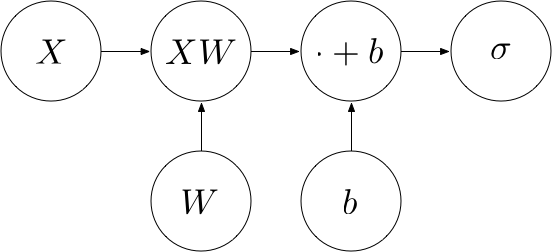

Deep Learning From Scratch II: Perceptrons
This is part 2 of a series of tutorials, in which we develop the mathematical and algorithmic underpinnings of deep neural networks from scratch and implement our own neural network library in Python, mimicing the TensorFlow API. Start with the first part: I: Computational Graphs.
- Part I: Computational Graphs
- Part II: Perceptrons
- Part III: Training criterion
- Part IV: Gradient Descent and Backpropagation
- Part V: Multi-Layer Perceptrons
- Part VI: TensorFlow
Perceptrons
A motivating example
Perceptrons are a miniature form of neural network and a basic building block of more complex architectures. Before going into the details, let's motivate them by an example. Assume that we are given a dataset consisting of 100 points in the plane. Half of the points are red and half of the points are blue.
# Create red points centered at (-2, -2)
red_points = np.random.randn(50, 2) - 2*np.ones((50, 2))
# Create blue points centered at (2, 2)
blue_points = np.random.randn(50, 2) + 2*np.ones((50, 2))
# Plot the red and blue points
plt.scatter(red_points[:,0], red_points[:,1], color='red')
plt.scatter(blue_points[:,0], blue_points[:,1], color='blue')As we can see, the red points are centered at $(-2, -2)$ and the blue points are centered at $(2, 2)$. Now, having seen this data, we can ask ourselves whether there is a way to determine if a point should be red or blue. For example, if someone asks us what the color of the point $(3, 2)$ should be, we'd best respond with blue. Even though this point was not part of the data we have seen, we can infer this since it is located in the blue region of the space.
But what is the general rule to determine if a point is more likely to be blue than red? Apparently, we can draw a line $y = -x$ that nicely separates the space into a red region and a blue region:
# Plot a line y = -x
x_axis = np.linspace(-4, 4, 100)
y_axis = -x_axis
plt.plot(x_axis, y_axis)We can implicitly represent this line using a weight vector $w$ and a bias $b$. The line then corresponds to the set of points $x$ where
$$w^T x + b = 0.$$
In the case above, we have $w = (1, 1)^T$ and $b = 0$. Now, in order to test whether the point is blue or red, we just have to check whether it is above or below the line. This can be achieved by checking the sign of $w^T x + b$. If it is positive, then $x$ is above the line. If it is negative, then $x$ is below the line. Let's perform this test for our example point $(3, 2)^T$:
$$
\begin{pmatrix}
1 & 1
\end{pmatrix}
\cdot \begin{pmatrix}
3 \\
2
\end{pmatrix}
= 5
$$
Since 5 > 0, we know that the point is above the line and, therefore, should be classified as blue.
Perceptron definition
In general terms, a classifier is a function $\hat{c} : \mathbb{R}^d \rightarrow \{1, 2, ..., C\}$ that maps a point onto one of $C$ classes. A binary classifier is a classifier where $C = 2$, i.e. we have two classes. A perceptron with weight $w \in \mathbb{R}^d$ and bias $b \in \mathbb{R}^d$ is a binary classifier where
$$
\hat{c}(x) =
\begin{cases}
1, & \text{if } w^T x + b \geq 0 \\
2, & \text{if } w^T
x + b < 0
\end{cases}
$$
$\hat{c}$ partitions $\mathbb{R}^d$ into two half-spaces, each corresponding to one of the two classes. In the 2-dimensional example above, the partitioning is along a line. In general, the partitioning is along a $d-1$ dimensional hyperplane.
From classes to probabilities
Depending on the application, we may be interested not only in determining the most likely class of a point, but also the probability with which it belongs to that class. Note that the higher the value of $w^T x + b$, the higher is its distance to the separating line and, therefore, the higher is our confidence that it belongs to the blue class. But this value can be arbitrarily high. In order to turn this value into a probability, we need to "squash" the values to lie between 0 and 1. One way to do this is by applying the sigmoid function $\sigma$:
$$p(\hat{c}(x) = 1 \mid x) = \sigma(w^T x + b)$$
where $$\sigma(a) = \frac{1}{1 + e^{-a}}$$
Let's take a look at what the sigmoid function looks like:
# Create an interval from -5 to 5 in steps of 0.01
a = np.arange(-5, 5, 0.01)
# Compute corresponding sigmoid function values
s = 1 / (1 + np.exp(-a))
# Plot them
plt.plot(a, s)
plt.grid(True)
plt.show()As we can see, the sigmoid function assigns a probability of 0.5 to values where $w^T x + b = 0$ (i.e. points on the line) and asymptotes towards 1 the higher the value of $w^T x + b$ becomes, and towards 0 the lower it becomes, which is exactly what we want.
Let's now define the sigmoid function as an operation, since we'll need it later:
class sigmoid(Operation):
"""Returns the sigmoid of x element-wise.
"""
def __init__(self, a):
"""Construct sigmoid
Args:
a: Input node
"""
super().__init__([a])
def compute(self, a_value):
"""Compute the output of the sigmoid operation
Args:
a_value: Input value
"""
return 1 / (1 + np.exp(-a_value))The entire computational graph of the perceptron now looks as follows:

Example
Using what we have learned, we can now build a perceptron for the red/blue example in Python.
# Create a new graph
Graph().as_default()
x = placeholder()
w = Variable([1, 1])
b = Variable(0)
p = sigmoid( add(matmul(w, x), b) )Let's use this perceptron to compute the probability that $(3, 2)^T$ is a blue point:
session = Session()
print(session.run(p, {
x: [3, 2]
}))Multi-class perceptron
So far, we have used the perceptron as a binary classifier, telling us the probability $p$ that a point $x$ belongs to one of two classes. The probability of $x$ belonging to the respective other class is then given by $1-p$. Generally, however, we have more than two classes. For example, when classifying an image, there may be numerous output classes (dog, chair, human, house, ...). We can extend the perceptron to compute multiple output probabilities.
Let $C$ denote the number of output classes. We want to perform multiple linear classifications in parallel, one for each of the $C$ classes. To do this, we introduce a weight vector for each class ($w_1, w_2, ..., w_C$) and a bias value for each class ($b_1, b_2, ..., b_C$). The output of our perceptron should now be a $C$-dimensional vector, each of whose entries contains the probability of the respective class:
$$
output = \left(
\begin{array}{c}
\sigma(w_1^Tx + b_1)\\
\sigma(w_2^Tx +
b_2)\\
...\\
\sigma(w_C^Tx + b_C)\\
\end{array}
\right)
$$
In order to do this efficiently, we arrange the weight vectors in a matrix $W = (w_1, w_2, ..., w_C) \in \mathbb{R}^{d \times C}$ whose columns correspond to the $w_i$s. Similarly, we arrange the bias values in a vector $b = (b_1, b_2, ..., b_C)^T \in \mathbb{R}^C$.
Instead of computing each entry of the output individually, we do the following:
- Compute $x \cdot W$, which yields the
following:
$$
\left(
\begin{array}{c}
w_1^Tx\\
w_2^Tx\\
...\\
w_C^Tx\\
\end{array}
\right)
$$ - Add the bias vector $b$, which yields the following:
$$
\left(
\begin{array}{c}
w_1^Tx + b_1\\
w_2^Tx + b_2\\
...\\
w_C^Tx + b_C\\
\end{array}
\right)
$$ - Apply the sigmoid element-wise, which yields our intended output:
$$
\left(
\begin{array}{c}
\sigma(w_1^Tx + b_1)\\
\sigma(w_2^Tx + b_2)\\
...\\
\sigma(w_C^Tx + b_C)\\
\end{array}
\right)
$$
The following computational graph describes this procedure:

Softmax
When the output classes are disjoint, the output probabilities should sum up to one. In this case, we apply the softmax function to the vector $a = xW + b$ instead of the element-wise sigmoid, which makes sure that each probability is between 0 and 1 and the sum of the probabilities is 1:
$$
\sigma(a)_i = \frac{e^{a_i}}{\sum_{j = 1}^C e^{a_j}}
$$
class softmax(Operation):
"""Returns the softmax of a.
"""
def __init__(self, a):
"""Construct softmax
Args:
a: Input node
"""
super().__init__([a])
def compute(self, a_value):
"""Compute the output of the softmax operation
Args:
a_value: Input value
"""
return np.exp(a_value) / np.sum(np.exp(a_value), axis=1)[:, None]Batch computation
The matrix form allows us to feed in more than one point at a time. That is, instead of a single point $x$, we could feed in a matrix $X \in \mathbb{R}^{N \times d}$ containing one point per row (i.e. $N$ rows of $d$-dimensional points). We refer to such a matrix as a batch. Instead of $xW$, we compute $XW$. This returns an $N \times C$ matrix, each of whose rows contains $xW$ for one point $x$. To each row, we add a bias vector $b$, which is now an $1 \times m$ row vector. The whole procedure thus computes a function $f : \mathbb{R}^{N \times d} \rightarrow \mathbb{R}^{m}$ where $f(X) = \sigma(XW + b)$. The computational graph looks as follows:

Example
Let's now generalize our red/blue perceptron to allow for batch computation and multiple output classes.
# Create a new graph
Graph().as_default()
X = placeholder()
# Create a weight matrix for 2 output classes:
# One with a weight vector (1, 1) for blue and one with a weight vector (-1, -1) for red
W = Variable([
[1, -1],
[1, -1]
])
b = Variable([0, 0])
p = softmax( add(matmul(X, W), b) )
# Create a session and run the perceptron on our blue/red points
session = Session()
output_probabilities = session.run(p, {
X: np.concatenate((blue_points, red_points))
})
# Print the first 10 lines, corresponding to the probabilities of the first 10 points
print(output_probabilities[:10])Since the first 10 points in our data are all blue, the perceptron outputs high probabilities for blue (left column) and low probabilities for red (right column), as expected.
If you have any questions, feel free to leave a comment. Otherwise, continue with the next part: III: Training criterion